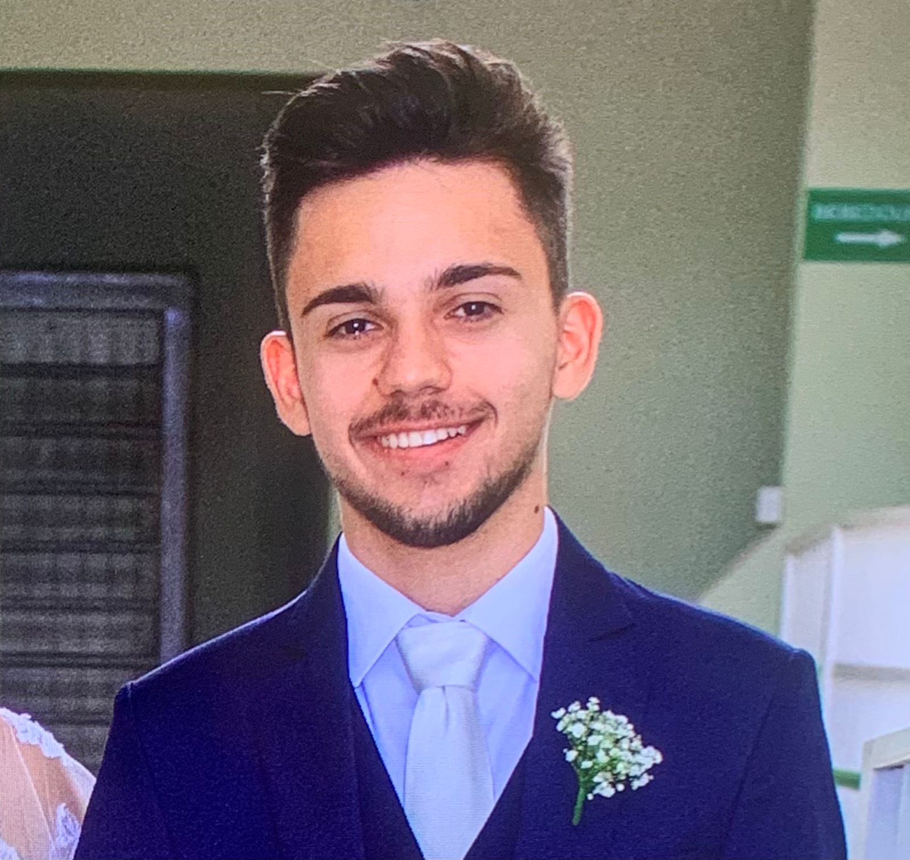
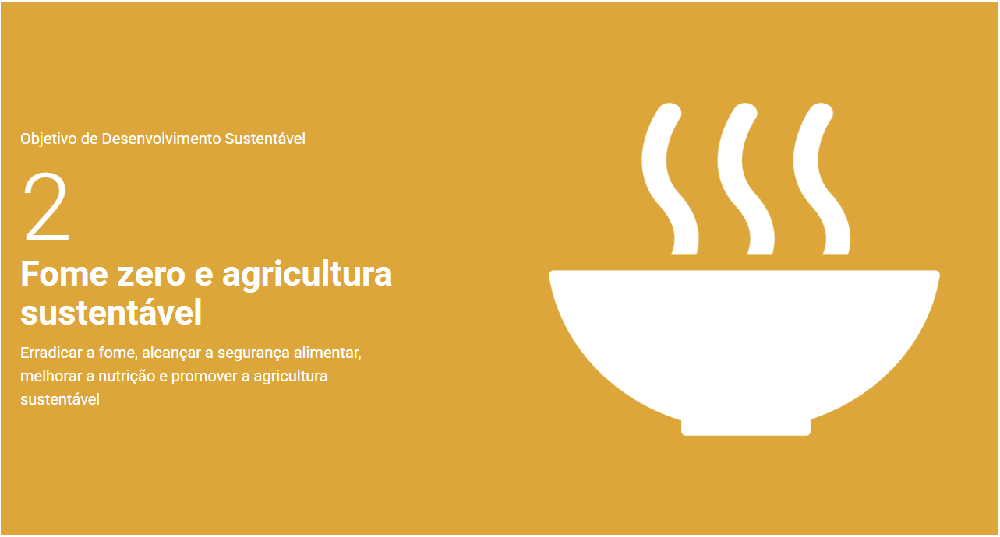

Sou estudante de Engenharia de Computação da Universidade Tecnológica Federal do Paraná - UTFPR de Cornélio Procópio. Atualmente estou no 7º Período. Atuo como líder da Aviônica do projeto de Extensão Equipe Rocket, e desenvolvo, junto ao Departamento Acadêmico de Engenharia Elétrica, uma Iniciação Científica na área de sistemas embarcados, referente à sistemas de correção de rota em tempo real de colhedoras agrícolas.

Ensino infantil, fundamental e médio
Cooperativa Educaional de Bariri - COEBA
2007 - 2022
Graduação em Engenharia de Computação
UTFPR-CP
2023 - atual